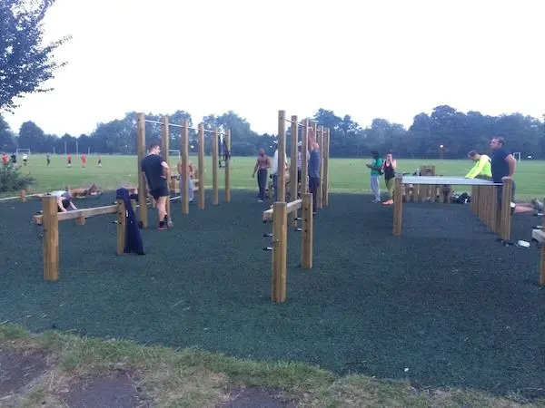

Exercising In Transit
Info
| Summary | Exercising while you travel can be difficult -- let's work through this. |
|---|---|
| Shared | 2014-09-29 |
| Revised | 2023-02-04 @ 18:00 UTC |
Many folks who travel are no strangers to a general decline in health (and bank account funds!) while on their adventures. Apart from being less likely to cook their own meals, the general lack of exercise people also experience while on the move in new, unfamiliar places, creates a cycle of unhealthiness that is difficult to break. Since I’ve moved to London, I have had to consider my options and find a way to maintain a healthy diet while also getting regular, meaningful exercise. Luckily, London itself has come to the rescue.
Since 2007, The Great Outdoor Gym Company, at the behest of local councils, has installed hundreds of outdoor gyms & obstacles in parks all throughout the UK (notably London). There are surely other vendors, but this is the only one of which I know.

The gyms sport everything from pullup & parallel bars to vertical presses to elliptical machines. Clapham Common, where I exercise, possesses at least three outdoor gyms that are heavily used every day and have surprisingly low maintenance plus resistance to the elements.
"Great; loads of gyms! Now what?"
The phrase weary traveler is fairly descriptive of the effects of travel on people. Whether you are walking, sitting or sleeping for a long time, the effects are similar: you are tired! And the last thing you want to do when you’re tired is exercise. This needs to change.
Do you have a good work ethic? Are you rarely late to work or meetings? What is it about these that make you attend and do so in a timely fashion? You probably say, "This is something I have to do, so I am going to power through and do it, even if I don’t want to." So why not treat exercise in this manner?
In short, you need to learn to treat exercise like an unavoidable daily event; like a meeting. If you can do this, then all procrastination and "I’ll do it when I feel like it" excuses go right out the door.
If you are worried about not having a place to work out in the area you are traveling to, do a little research beforehand.
- Google for outdoor/indoor gyms in the area
- Youtube exercises you can do in your hotel room
- Use Yelp to find places where you can eat right — not lazily
Ultimately, all of these decisions come down to you. Whether you are on a short trip or are doing extensive traveling, if you take it upon yourself to strive for a sound mind and body, you will find a way to better yourself while on the road.